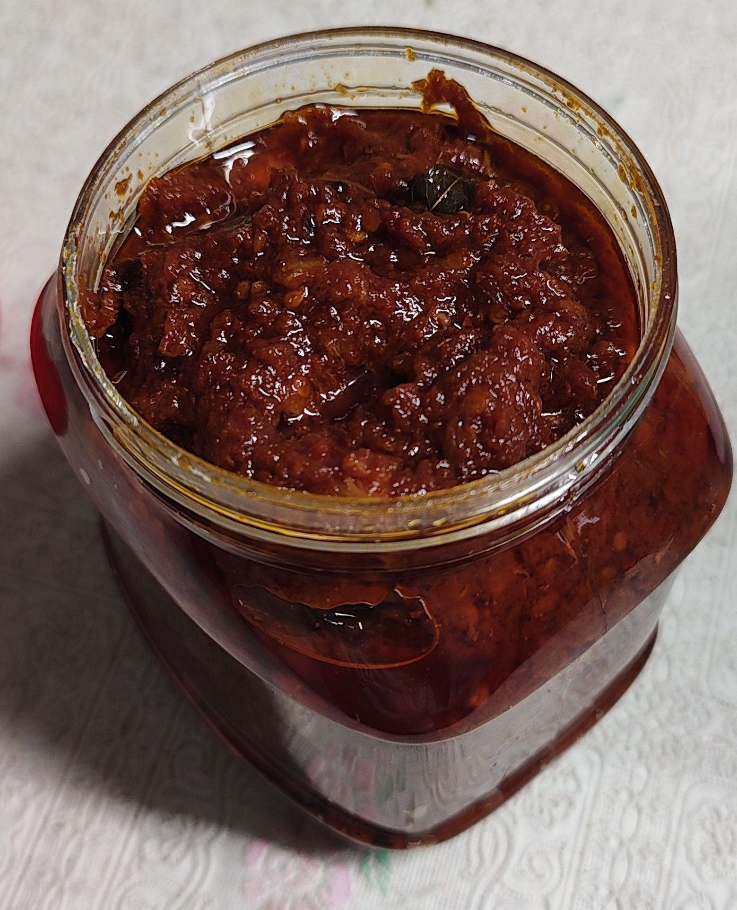

Home
Tomota Thokku

Tomato Thokku is a flavorful Tamil-style condiment made with tomatoes, red chilies, and tamarind, slow-cooked with aromatic spices. It has a rich, tangy, and slightly spicy taste, enhanced by sesame oil and roasted fenugreek-mustard powder. This versatile thokku pairs perfectly with rice, dosa, idli, or chapati.
Ingredients
- 15 tomatos
- 8 to 10 red dry chilli
- small piece tamarind
- curry leaves
- 10 to 20 garlic pieces
- oil(Sesame oil - Recommended if you have) & mustard
- fenugreek seeds
- salt
Instructions
- Cook tomatoes, red chili, and tamarind until the water evaporates. Let it cool and blend coarsely (about 80% smooth).
- Dry roast fenugreek and mustard seeds, then grind them into a fine powder.
- Heat sesame oil in a pan, add mustard seeds, curry leaves, and garlic. Sauté, then add the blended tomato mix and salt. Cook until oil separates, then mix in the spice powder.
Now Tomato thokku is ready! :)